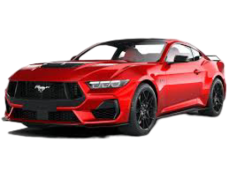
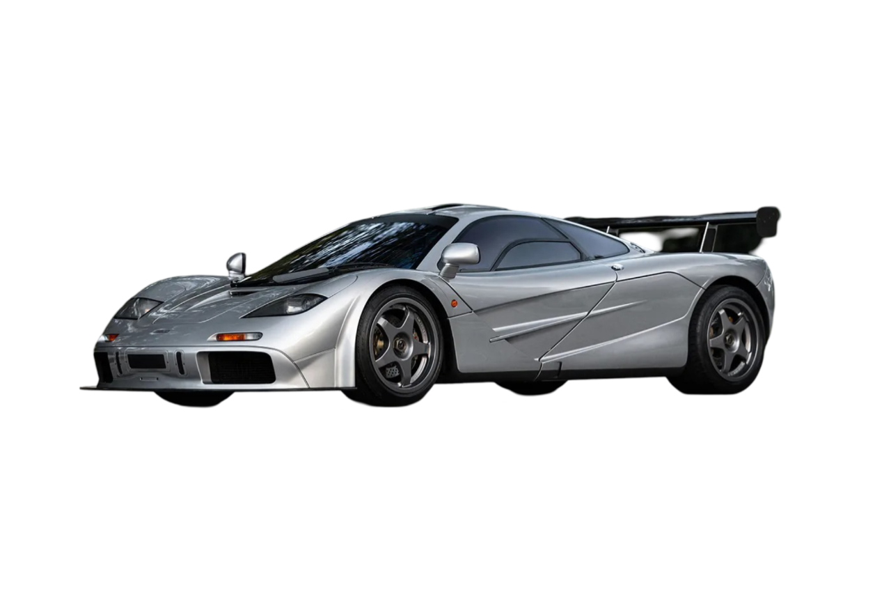

Carros más reconocidos de cada marca
Ford Mustang
DESCRIPCIÓN: Lanzado en 1964, el Ford Mustang es un ícono de los automóviles deportivos estadounidenses. Se considera uno de los primeros "pony cars", un segmento que combina un diseño atractivo con un rendimiento potente a un precio accesible. A lo largo de los años, el Mustang ha ofrecido una variedad de motores, desde opciones de cuatro cilindros hasta potentes V8. Su diseño muscular y su distintiva parrilla delantera lo hacen fácilmente reconocible. Evolución: Ha pasado por varias generaciones, cada una con mejoras en tecnología, rendimiento y eficiencia. El Mustang ha mantenido su popularidad gracias a su legado en la cultura automotriz y su presencia en películas y medios.
Ferrari Enzo

El Ferrari Enzo es un automóvil superdeportivo berlinetta de dos puertas diédricas biplaza, producido por el fabricante italiano Ferrari entre 2002 y 2004. Inicialmente se pensó en una producción limitada de 349 unidades, pero en realidad se construyeron 400. Su precio base cuando nuevo era de US$652,890. El Enzo es la continuación de la saga de superdeportivos iniciada en 1984 con el 288 GTO, continuada por los F40 de 1987 y F50 de 1995.
McLaren F1
El McLaren F1 es un automóvil superdeportivo coupé de 2 puertas diédricas triplaza desarrollado y producido por el fabricante británico McLaren Automotive, perteneciente al McLaren Group, junto al equipo McLaren de Fórmula 1. Fue diseñado por Gordon Murray y Peter Stevens. Las versiones de competición participaron en las 24 Horas de Le Mans, siendo el primer coche en ganar la prueba en su debut; en el Campeonato Japonés de Gran Turismos; y el Campeonato FIA GT.